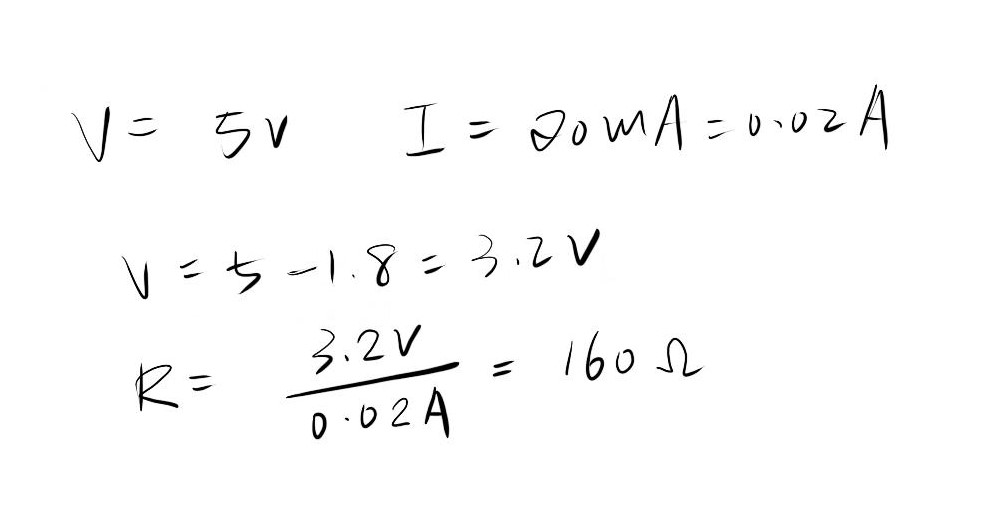

Alice's Assignment 3!
Schematic
In this schematic, one green LED light is connected to pin 11, with a resister controlling the current. A light sensor and resistor is connected to 5V power source, and voltage divided to input A0.
Calculations

I used the ohm's law to calculate the appropriate resistor to use. The resistor should be at least 160 ohm. I chose 330 ohm for this assignment. For the sensor, I chose a 330 resistor, because any resistor is fine to control this current.
Circuit
I used an Arduino board for powering the LED and pushbutton. The Arduino board is connected to my computer for power source. Pin 11 is connected to the resistor and LED, and the power pin (5v) is connected to the light sensor. The light sensor is voltage diverged to input pin A0.
Code
/*
Alice Li
Assignment #3
HCDE 439
Jan 28th, 2019
*/
const int analogInPin = A0; // Analog input pin that the sensor is attached to
const int analogOutPin = 11; // Analog output pin that the LED is attached to
int sensorValue = 0; // value read from the sensor
int outputValue = 0; // value output
void setup() {
// initialize serial communications at 9600 bps:
Serial.begin(9600);
}
void loop() {
sensorValue = analogRead(analogInPin); // read in the analog value
outputValue = map(sensorValue, 0, 1023, 0, 255); // map it to the range of the analog out
// print the results to the Serial Monitor:
Serial.print("sensor = ");
Serial.print(sensorValue);
Serial.print("\t output = ");
Serial.println(outputValue);
if (sensorValue <= 20) { // if the sensor senses less than 20 light (covered)
// the LED light from pin 11 turn on
digitalWrite(11, HIGH);
// the LED light will stay on for 0.1 second
delay(100);
// the LED light will turn off
digitalWrite(11, LOW);
// the LED light will be switched off for 0.1 second
delay(100);
} else { // change the analog to the out value
analogWrite(analogOutPin, outputValue); // change the analog out value
}
}
Circuit Operation
This gif shows the operation of the circuit. With the first LED mapping to the light sensor, when the sensor is dark (covered), the LED will start to blink.